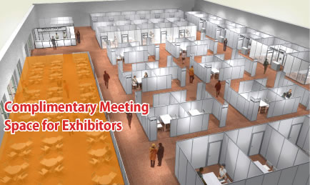

TOP PAGE EXHIBITOR INFO Support Program for Exhibitors
EXHIBITOR INFO［Support Program for Exhibitors］
Business Matching System “Asia Business Gateway” (Open to July, 2012)
The Asia Business Gateway, the system that connects exhibitors with Business Day visitors or other exhibitors, is available. Via PCs or smartphones, business partners can be searched, an appointment can be made, the setting of business talk can be communicated, and a no-charged meeting space can be reserved. The system can be used in Japanese or in English for free.
- ■System Flow
- ■TOKYO GAME SHOW 2011 Business Matching System
- ・Registered Companies/Organizations: 323
(122 from Overseas)
・Pre-event Matching Application Number: 3,261
・Confirmed Appointments: 294
(197 for International Matching Appointments)
Business Meeting Area
TOKYO GAME SHOW 2012 offers exhibitors complimentary meeting space at Business Meeting Area.
- TOKYO GAME SHOW 2011 「Complimentary Meeting Space」
- ・Number of Business Meetings: 235
・Countries/Regions from: Canada, Chile, China, France, Germany, Hong Kong, Italy, Korea, Lebanon, Malaysia, Mexico, Poland, Russia, Singapore, Spain, Sweden, Taiwan, The Neitherlands, United Kingdom, United States, Vietnam
International Business Consultation Area

The International Business Consultation Area is set up inside the venue so that visitors can seek consultation for knowledge, knowhow, and services necessary for international business. Exhibitors and visitors can use the Area without any charges. It is planned that the staff of JETRO, an entity that supports Japanese companies in gaining a foothold in overseas countries, the staff in charge of giving advice on PR targeting overseas markets, and the staff in charge of business matching between Japanese and overseas companies are always stationed at the Area.